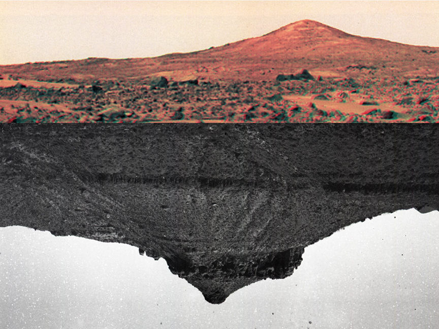

The Desert as Mirror by Sarah and Joseph Belknap
We went to the desert for the eclipse. If we squinted, we could pretend we were on Mars.
We hadn’t been out of the city for a while and saw the biggest sky – it made us feel so incredibly tiny. We slept outside and ate outside and hiked outside. We tried to look at every rock we passed. Everything was red and brown and felt so warm.
We brought our medium format film camera and photographed the landscape, something we both remember doing but hadn’t done together. The last time one of us intentionally shot the landscape was more than twenty years ago.
When we developed the film back at home, we could squint and pretend we had been to Mars.
Sarah Belknap and Joseph Belknap are partners, interdisciplinary artists, and educators. Stretching and playing with pareidolia and mythology, their work draws on the cosmos, deep time, conspiracy theories, science, and speculative fiction.
They work across space and many materials – combining photography, sculpture, film, drawing, and anything else they want to play with because they are always learning.
Aside from their studio practice, they run a free garden each spring and take as many trips to the woods as they can.